写给大家的设计书［读书笔记］
前年朋友推荐，买了一本《写给大家的设计书》这本书，前前后后反复看了三遍，看完后觉得很不错。纠正了之前的审美，以及知道了一些排版，室内设计等为什么美，学会了在生活中利用设计原则，规范自己的排版，应该算是居家必备，对大家日常生活工作都是有帮助的好书。
好的设计的四个重要的原则：
- 亲密性
- 对齐
- 重复
- 对比
亲密性
亲密性是指：讲相关的项组织在一起，移动这些项，使它们的物理位置相互靠近，这样以来，相关的项将被看作凝聚力一体的一个组，而不再是一堆彼此无关的片段。
物理位置接近就意味着存在关联（实际生活中也是如此，比如我们PC组的组员的坐在一起）
第一组对比图：
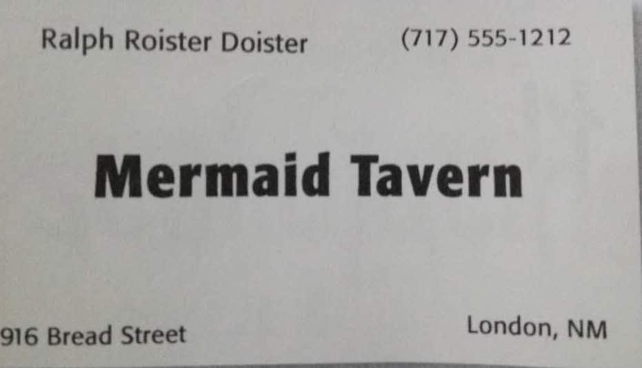
第一张，第二张，Mermaid Tavern［店名：美人鱼客栈］ Ralph Roister Doister［人名：拉尔夫］（717）555－1212［联系电话］等等，杂乱无章的摆放在一起，容易分散人的注意力
第三张：上面是店名和人名加粗，字号加大，靠在一起，说明它们才是这张名片的主体， 下面的联系电话，地址，城市是附属信息，用来说明主体。
第二组对比图：
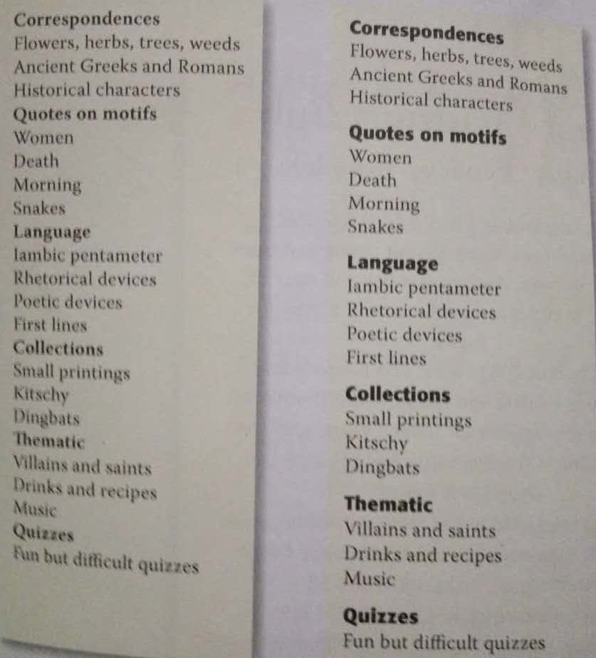
左边的图
- 一级分类和二级分类标题之间没有明显区别 ＝> 不清楚谁是一级分类
- 一级分类之间没有明显间隔 ＝> 不清楚这个分类是属于上一级分类，还是下一级
右边的图
- 一级分类和二级分类字体的粗细和大小都有明显区分 ＝> 一眼就能看清楚谁是几级分类
- 父分类和子分类的亲密性跟好，和上级分类更加疏远 ＝> 一眼就能看清楚谁是谁的子类
对齐
｀任何元素都不能在页面上随意安放， 每一项都应担与页面上的某个内容存在某种视觉上的联系｀。对齐原则要求特别小心，再不能像从前那样，只要页面上刚好有空间就把元素随意的“扔”到那里
第一组对比图：
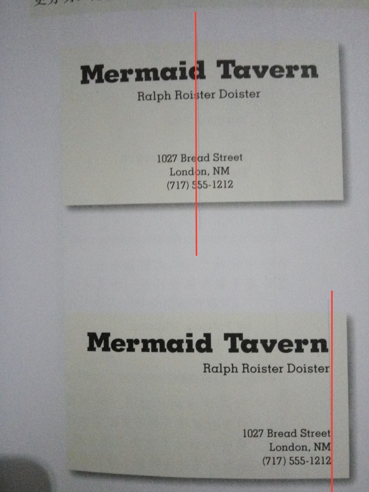
第一张图，中间的文字，是没有明显的对齐，这就违背了对齐的原则［每一项都应担与页面上的某个内容存在某种视觉上的联系］
第二张图，居中对齐［相对来说最保守的对齐方式］
第三张图，右对齐，形成视觉上的联系
第二组对比图：
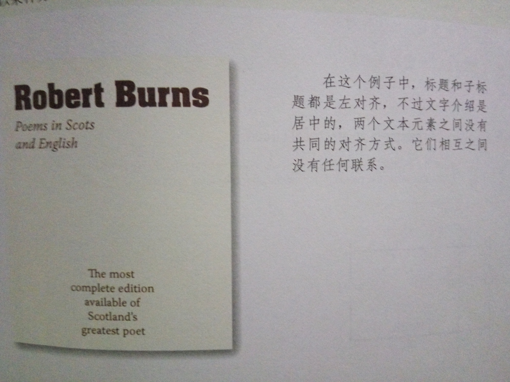
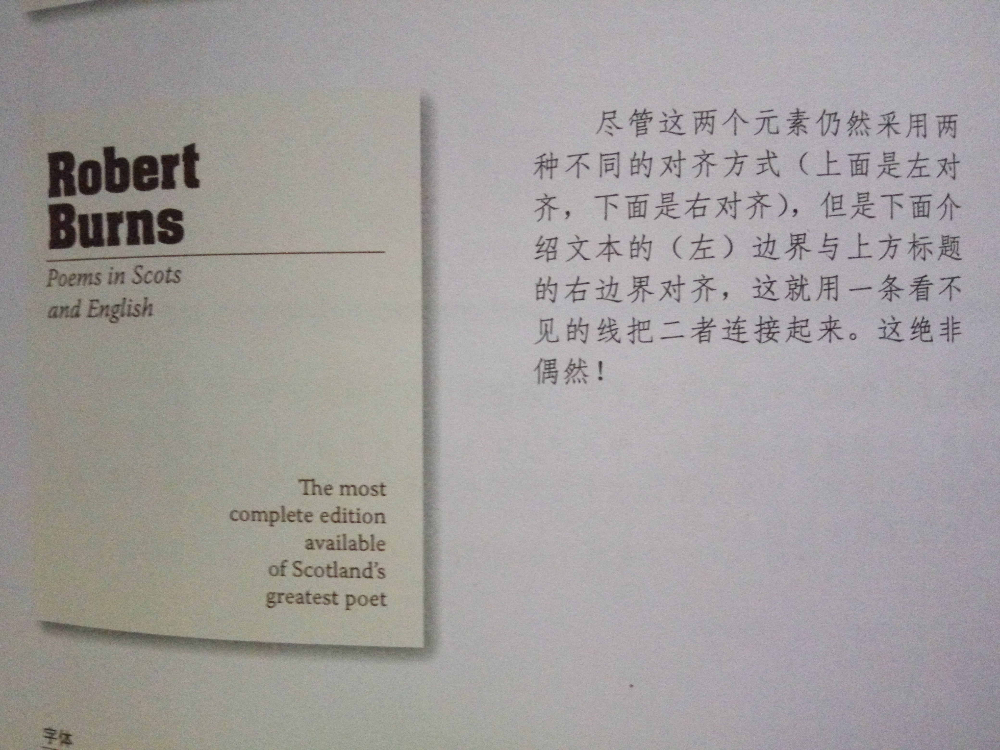
第三组对比图：
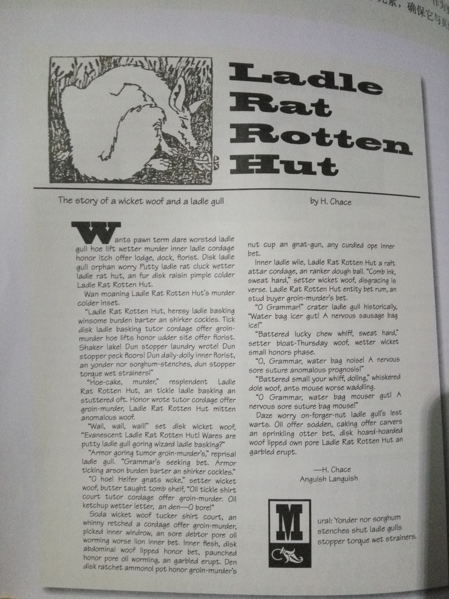
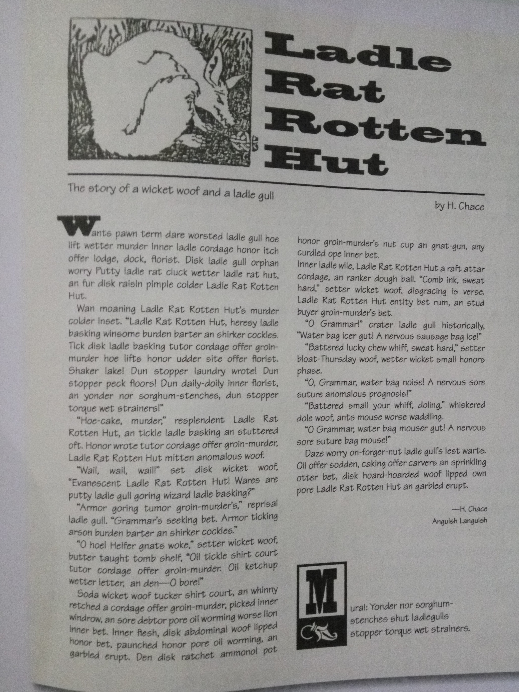
重复
“设计的某些方面需要在整个作品中重复” 重复元素可能是一种粗字体，一条粗线，某个项目符号／颜色／设计要素，某种格式，空间关系等。读者能看到的任何方面都可以作为重复元素。
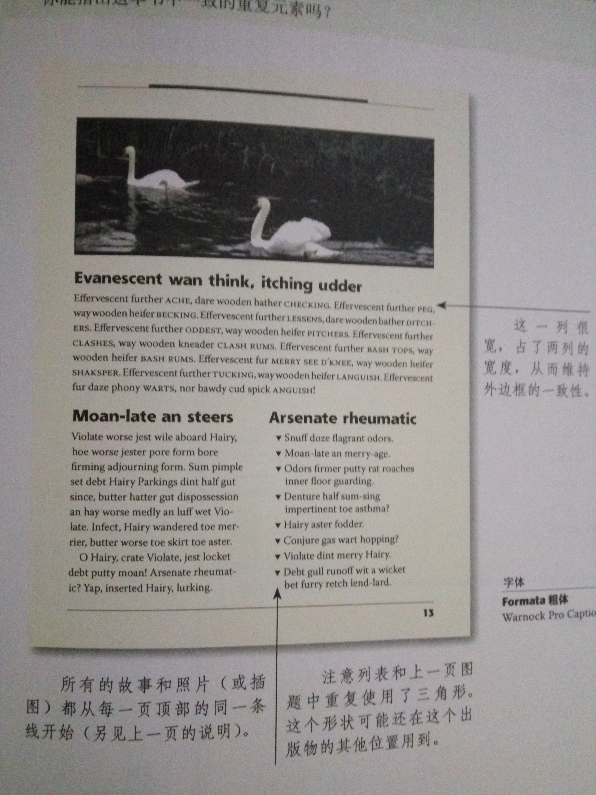
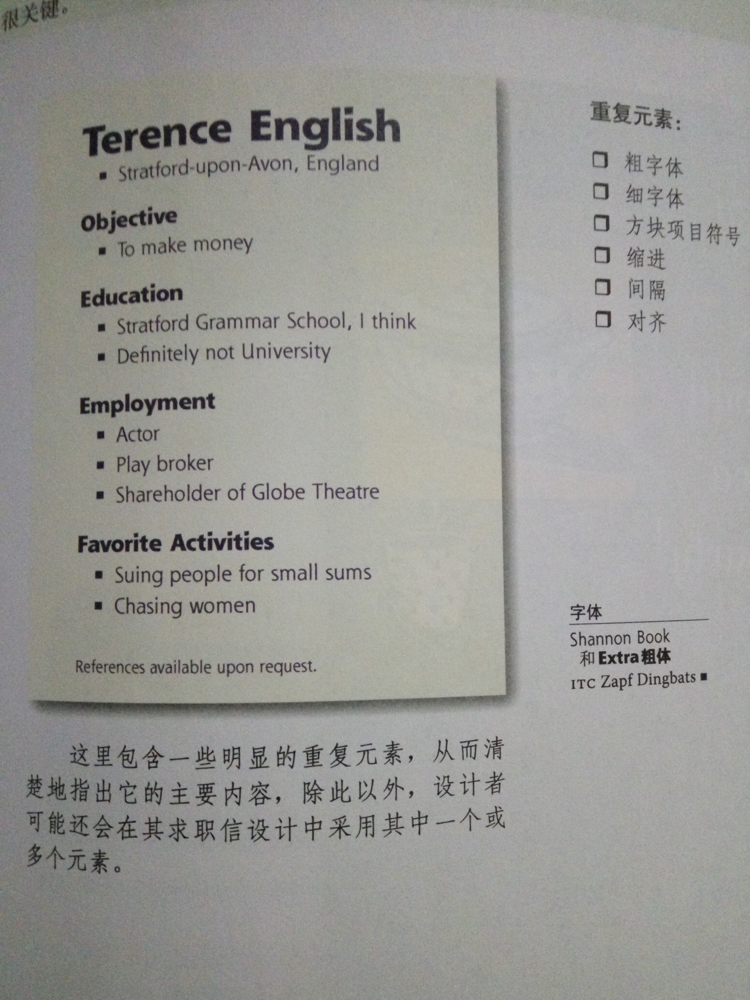
对比
对比是为了让页面增加视觉效果的最有效的途径之一，对比需要强烈，千万不要畏畏缩缩。 如果两个元素不同，就会产生对比，，倘若两个元素存在某种不同，但是差别不是很大，那么就做出的效果并不是｀对比｀，而是｀冲突｀。这就是关键，如果两个项目不完全相同，就应当使之不同，而且应当使截然不同
第一组对比图：
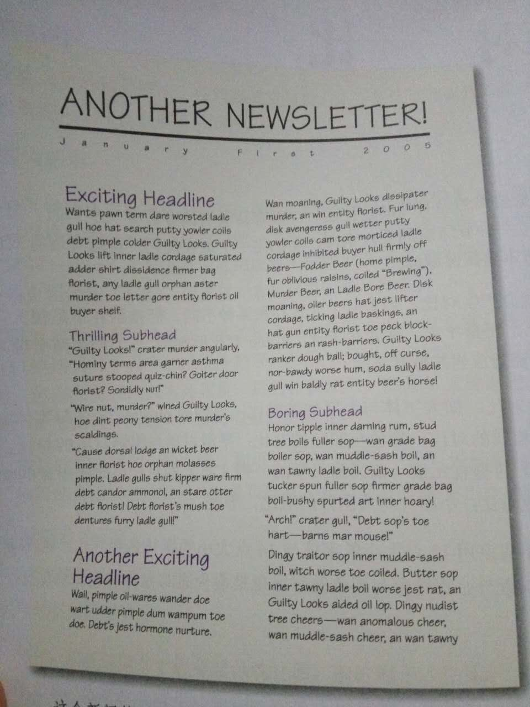
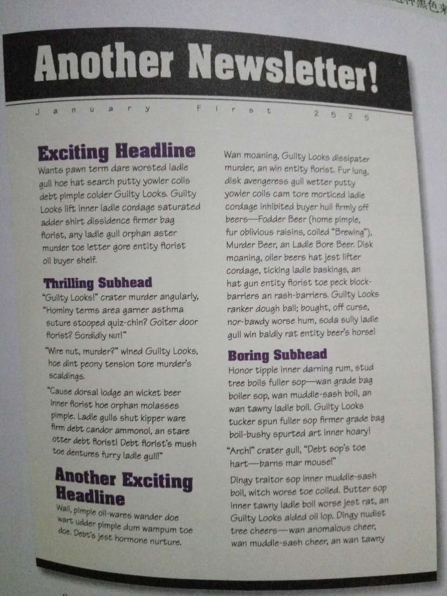
第二组对比图：
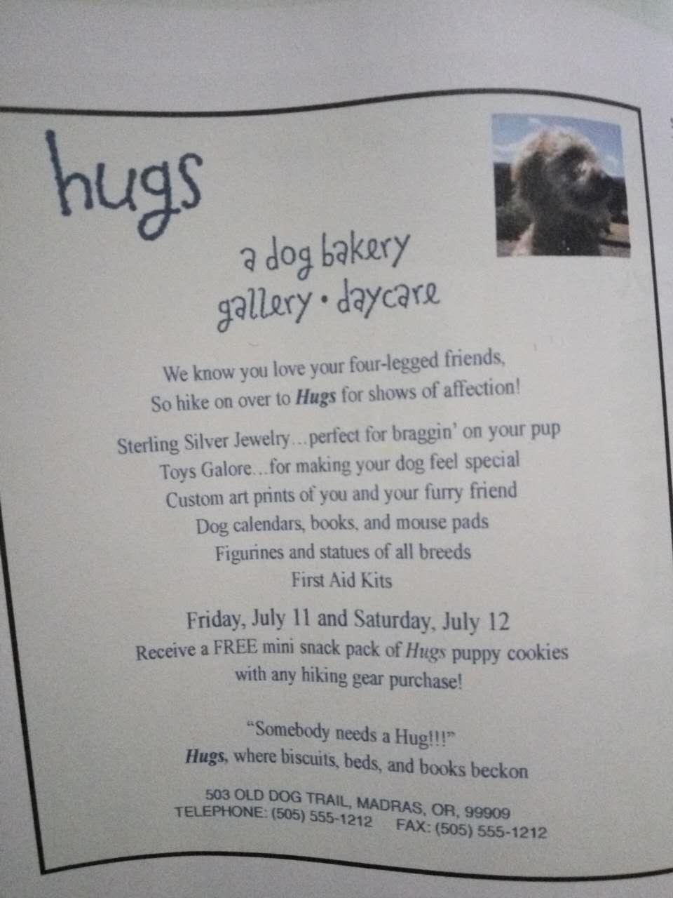
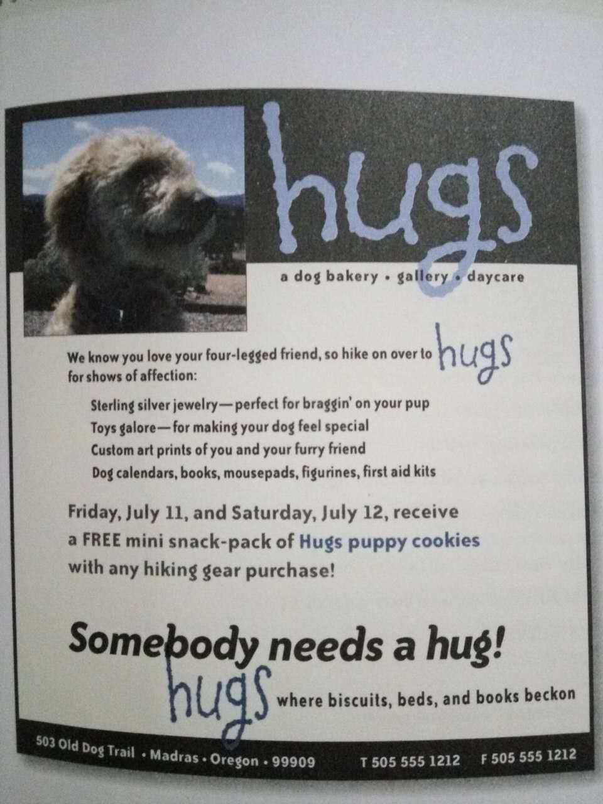
－ 去掉居中对齐
－ 重要的东西加以强调［头像］
－ 找出可以重复的元素［hugs］
－ 对比［黑白对比］［灰度对比］［字体大小对比］［字体对比］
最后我觉得可以上一张IKEA的厨房图，我觉得它对设计原则把握的很好，请大家参照图片，指出哪些地方利用了哪些设计原则